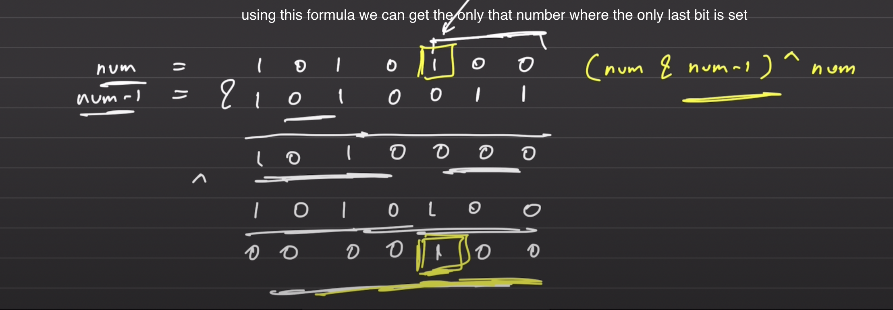

// C++ solution code goes here
class Solution {
public:
vector<int> singleNumber(vector<int>& nums) {
long long xorr = nums[0]; // XOR all elements (long long to avoid overflow)
int n = nums.size();
for(int i = 1; i < n; i++) {
xorr = xorr ^ nums[i]; // XOR the current number with previous result
}
// Find the rightmost set bit (differentiates the two unique numbers)
long long rightMostBitSetNumber = (xorr & (xorr - 1)) ^ xorr;
// Initialize two numbers to hold the result
int b1 = 0, b2 = 0;
// Divide the numbers into two groups based on the rightmost set bit
for(int i = 0; i < n; i++) {
if (rightMostBitSetNumber & nums[i]) { // Check if the rightmost bit is set
b1 = b1 ^ nums[i]; // XOR the number into b1
} else {
b2 = b2 ^ nums[i]; // XOR the number into b2
}
}
// Return the two unique numbers
return {b1, b2};
}
};
